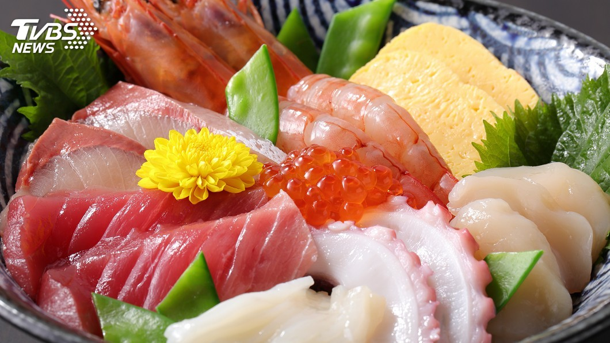

東京車站舉辦2019丼飯大賽，依照味道、外觀、CP值這三項在手機上投票，
去年的冠軍和亞軍今年自然是準備要再一次大展身手，從食材到吃法都有滿滿的話題，一起來看看今年參加比賽的各家丼飯，有多讓人垂涎三尺。
今年參加比賽的丼飯首先要介紹的就是它。
記者：「這家店可是在上一次大賽中，拿下冠軍呢。」
去年靠著滿到要掉出來的海鮮丼，拿下冠軍寶座今年為了拿下二連霸，店家再出招。
店長：「接下來會是秋天開始最為美味的食材，所以我們選擇了龍蝦。」
旁白：「首先要裝飾丼飯，鯛魚、鮪魚大腹、花枝等等，食材接二連三地放上去最後是放好一整尾的龍蝦，然後還有海膽跟鮭魚卵食材快要從碗裡滿出來的海鮮丼就完成了。」
這回海鮮料一樣是快要滿出來，但主角換上了晶瑩Q彈的龍蝦。
記者：「(龍蝦肉)超級Q彈的，龍蝦肉越咬越甜美滋味充滿了整個嘴巴，其他每一種都可以當作主菜的壽司食材齊聚一碗，真的就是一碗奢侈丼飯。」
至於以炸天婦羅聞名去年的亞軍，為了一雪前恥這回選用茄子、栗子、秋刀魚、鮭魚等等，七種秋天最美味的食材用180度高溫，一口氣炸到外酥內嫩。
店長：「過去一直都很重視天婦羅炸出來的份量，這回我們要拿特殊性來當賣點。」
所謂的賣點原來是醬汁換上味道更加濃稠的豬排醬醬汁
記者：「非常酥脆，醬汁配上青海苔粉，還有紅薑，簡直就像是在吃什錦燒一樣，非常有意思。」
一天限定40碗好吃到有時候才過中午就全數賣光。
旁白：「黑毛和牛的腰脊心，以恰到好處的霜降花紋柔嫩的肉質為特色，屬於非常稀少的肉品。」
至於以壽喜燒出名的淺草今半，選用美味但數量少的腰脊心，邊用平底鍋煎表面再用噴槍及時鎖住肉汁，但最後用的並非店家最自豪的壽喜燒醬汁而是蒲燒醬。
記者：「完全能夠吃出肉的美妙滋味，而且跟甜鹹的蒲燒醬也相當搭。」
淋上柴魚昆布高湯就是一碗海陸鮮味俱全的茶泡飯，究竟哪一碗丼飯才最受青睞，下個月月底就會揭曉。
